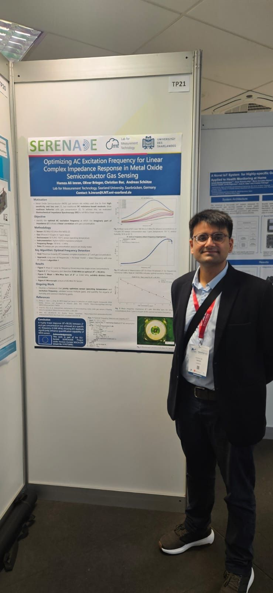
September 2025
Eurosensors 37
Poster presentation on AC excitation-frequency optimisation for MOS gas sensing.
Wrocław, PolandSelected conferences, doctoral-network training schools, technical courses, poster presentations, and earlier engineering events.
Recent activities focus on gas sensing, electrical impedance spectroscopy, food-freshness monitoring, and interdisciplinary doctoral training.

Poster presentation on AC excitation-frequency optimisation for MOS gas sensing.
Wrocław, Poland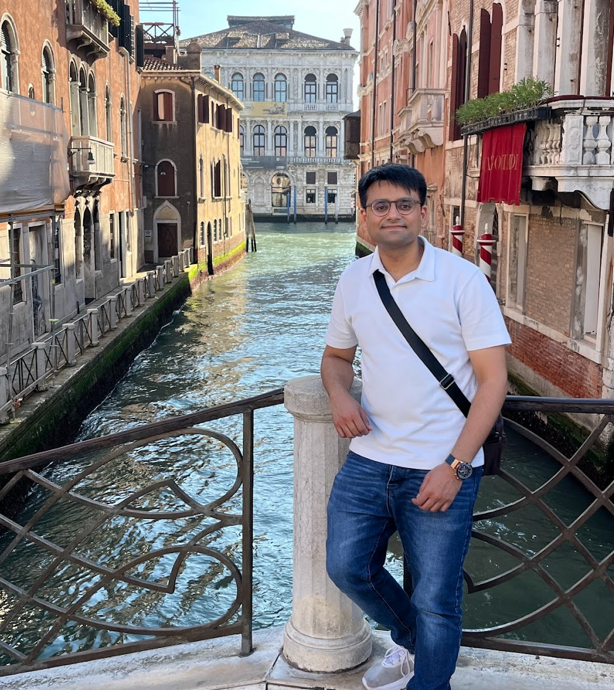
Doctoral-network training and scientific exchange within the SERENADE programme.
Padua, Italy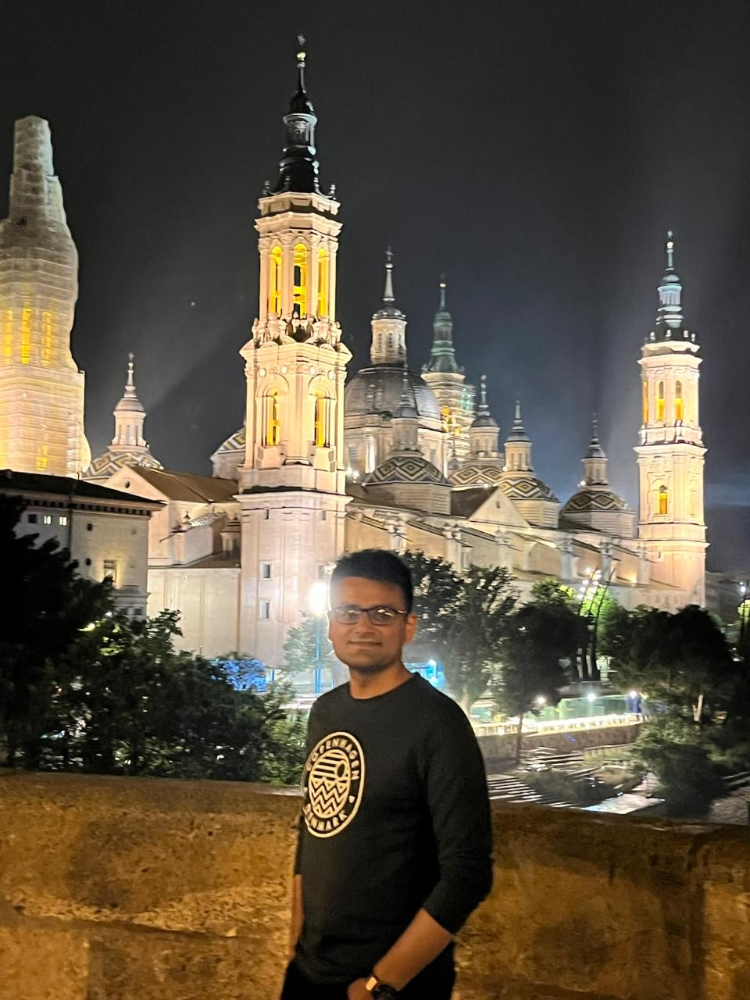
Training and collaboration around semiconductor sensor systems for food-state detection.
Zaragoza, Spain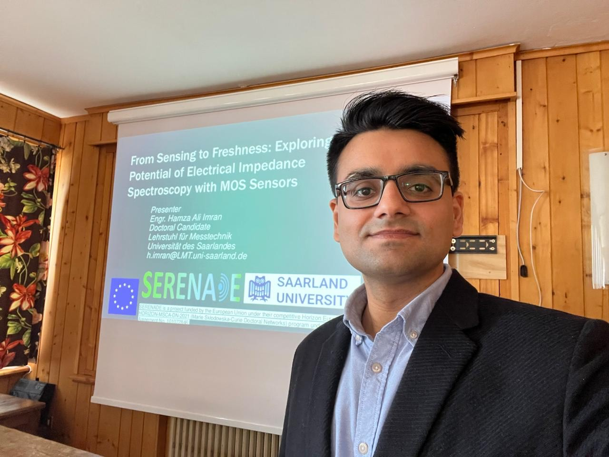
Presentation and technical discussion on the potential of EIS with MOS sensors.
Bormio, ItalyA selected archive spanning doctoral research, conference participation, funded student engineering, and robotics competitions.
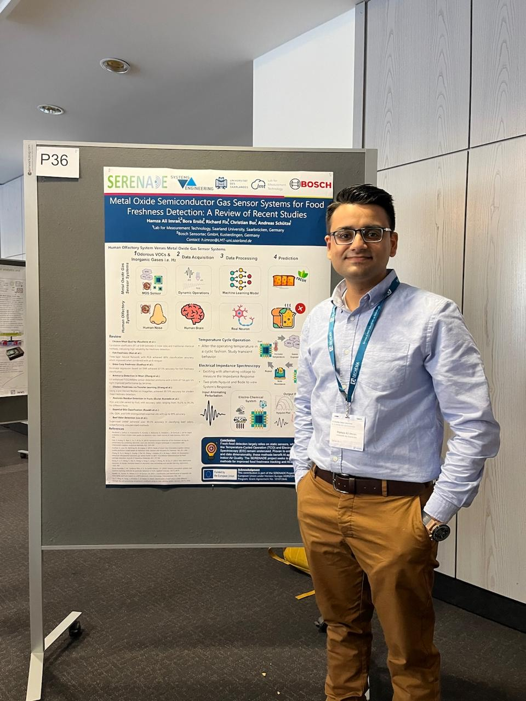
Dresden, Germany
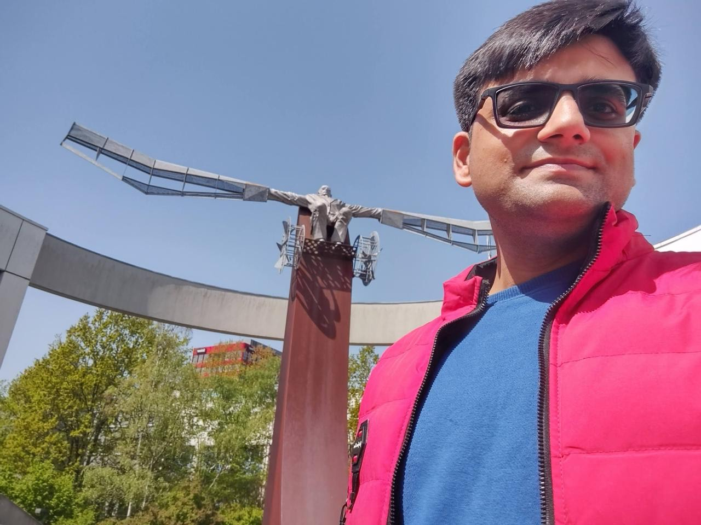
Saarbrücken, Germany
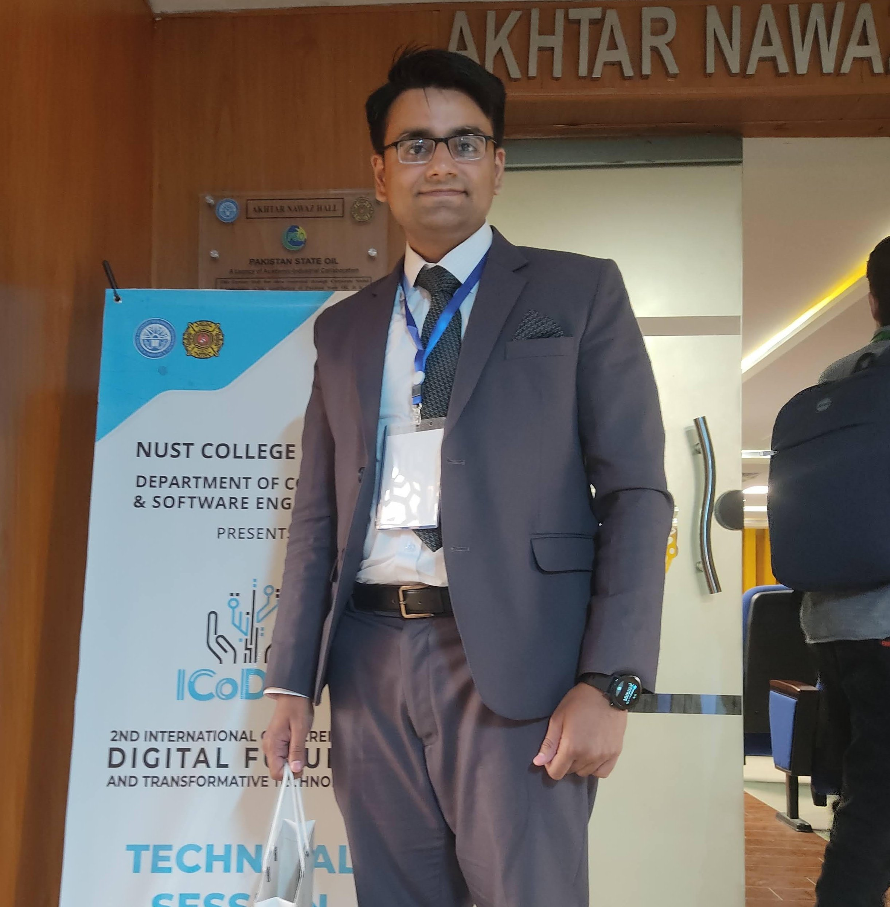
Rawalpindi, Pakistan
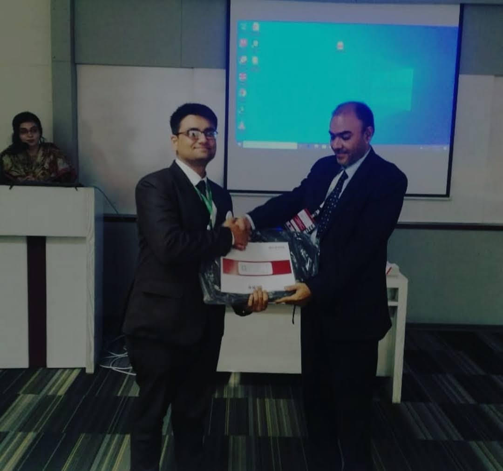
Karachi, Pakistan
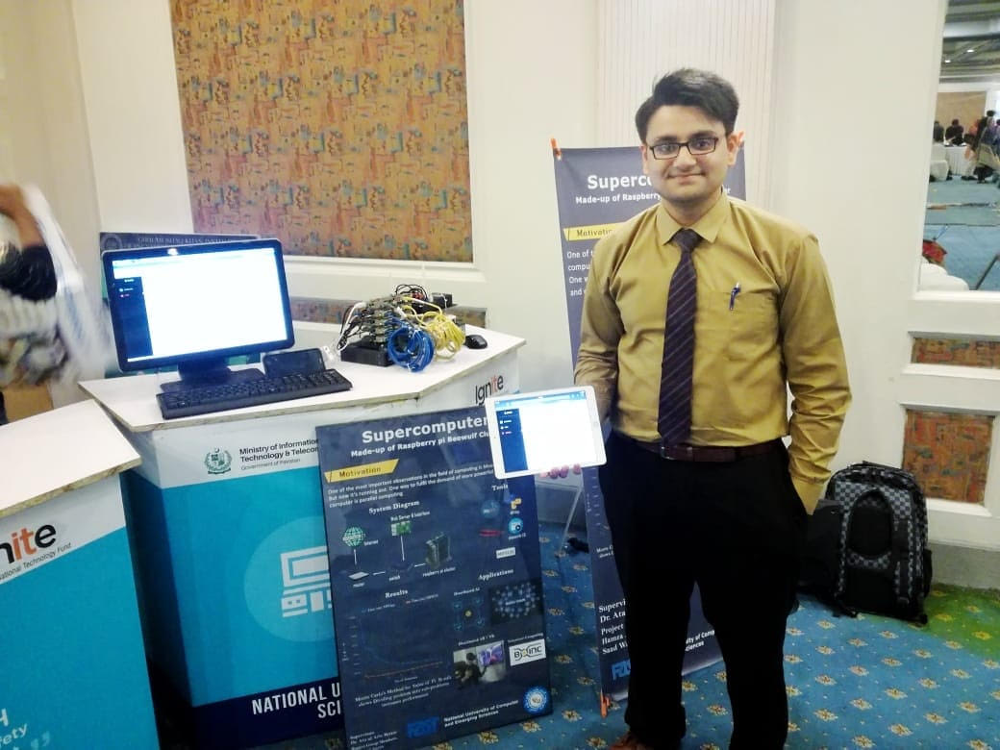
Islamabad, Pakistan
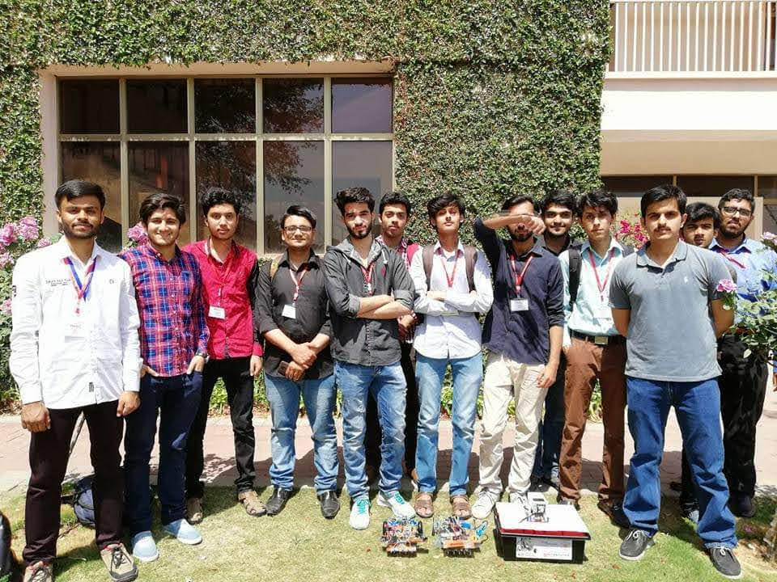
Islamabad, Pakistan
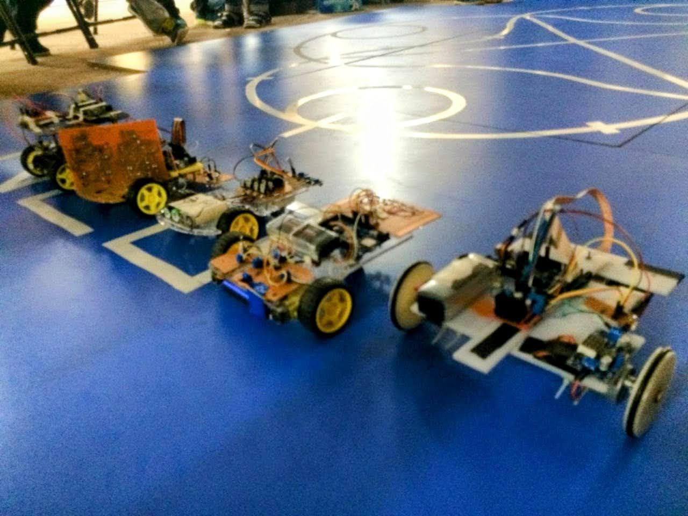
Topi, Pakistan